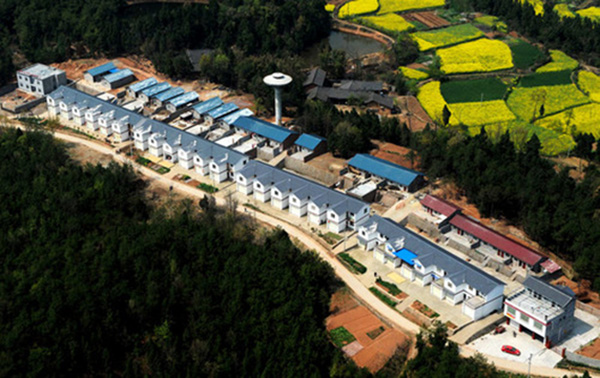

汶川地震灾区——灾后重建展新颜
距离2008年“5·12”汶川大地震已经过去整整十年，十年来当年的地震极重灾区四川的城市建设和市民生活都发生了翻天覆地的变化。地震后的汶川，早已在城市规划，城市建设等方面取得了令人瞩目的成就，未来也将具有更大的发展潜力。地震后的安置居民，也已经住进环境舒心，氛围融洽的社区，享受保障齐全，衣食无忧的新生活。在十年后回顾那场刻骨铭心的大地震，为的是不忘记“天灾无情，人间有爱”的感动，不忘记在党的领导下“众志成城，抗震救灾”的初心，它指引着重获新生的四川朝着实现中华民族伟大中国梦的方向砥砺前行。